Schneeberichte · November 2026
Tägliche Schneeberichte für Skifahrer: wo der Schnee liegt, was kommt und wo du fahren kannst, aus der SnowScope-Schneekarte und Messstationen. Jede Zahl stammt aus den Daten des Tages.

Die Schweiz hat am 23. November 76 cm auf Glacier 3000, mehr Schnee als in neun von zehn Wintern. Die Berner Oberland und die Walliser Alpen erhielten in drei Tagen bis zu 144 cm.
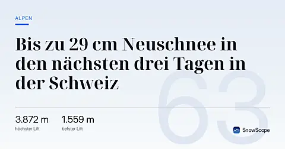
14 Schweizer Skigebiete am 23. November erfasst; Zermatt führt mit 63 cm Schneetiefe an, bis 26. November werden 29 cm mehr prognostiziert.

Zugspitze ist mit 63 cm am 23. November führend. Neun Skigebiete haben Schnee; in drei Tagen fielen am Nebelhorn 34 cm.

Zwölf bekannte Alpenskigebiete nach ihrer üblichen Dezember-Schneehöhe an der Mittelstation und am Gipfel gereiht, aus 46 vergangenen Wintern, mit dem Boden eines schwachen Dezembers und den Wochen, die nie enttäuschen.
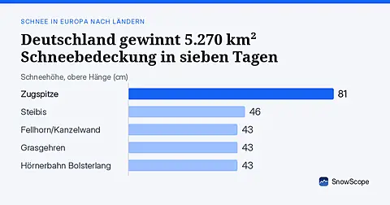
Die Schneebedeckung in Deutschland ist in einer Woche von 5.460 auf 10.730 km² angewachsen. Die Allgäuer Alpen führen mit 47 cm Neuschnee in 72 Stunden an (Stand: 22. November).

Bis 25. November werden 64 cm Neuschnee am Jungfraujoch Snow Fun Park erwartet. Daten vom 22. November.
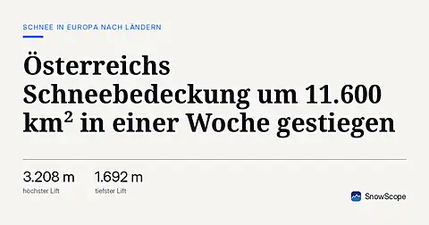
Österreich hat in sieben Tagen 11.600 km² Schnee hinzugewonnen. Stubaier Gletscher führt mit 67 cm an. Daten vom 22. November 2026.

Schweizer Alpen mit 71 Prozent Schneebedeckung gegenüber 18 Prozent in Frankreich am 22. November. Wallis hält 166 cm in 72 Stunden.

Lech/Zürs führt mit 47 cm Mächtigkeit und 46 cm Neuschnee in 72 Stunden an. Alle 11 Skigebiete haben Schnee. Daten vom 22. November.
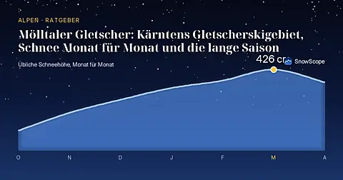
Der Mölltaler Gletscher über Flattach: übliche Schneehöhe im Tal, an der Mittelstation und am Gipfel aus 46 vergangenen Wintern, vom ersten Schnee im September bis zum Skifahren im Mai.

In den vergangenen 72 Stunden fiel Neuschnee ungleichmäßig verteilt über Deutschland: 39 cm in den Allgäuer Alpen, 31 cm in den Bayrischen Alpen, 16 cm im Schwarzwald. Daten vom 21.11.2026.

Österreich hat Schnee auf 56 Prozent der gemessenen Flächen am 21. November, weit vor Deutschland mit 7 Prozent. Vorarlberg erhielt in drei Tagen 47 cm Neuschnee.
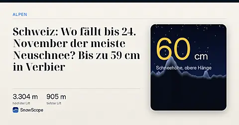
Schnee in der Schweiz am 21. November: Schneehöhen oben, Neuschnee, die nächsten drei Tage und der Tipp für einen Kurztrip.

Die Schweizer Berglandschaft gewann in einer Woche 6.410 km² Schneebedeckung hinzu.

Deutschland hat am 20. November 1.790 km² Schneebedeckung, Österreich führt mit 44 Prozent Weiß. Die Allgäuer Alpen erhielten in 72 Stunden 34 cm.
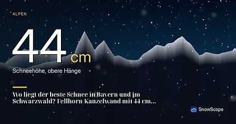
Schneelagebericht für 20. November: Fellhorn/Kanzelwand führt Bayern mit 44 cm an, gestützt durch 35 cm Neuschnee in drei Tagen.

Vorarlberg erhielt in den drei Tagen bis 20. November den meisten Neuschnee in Österreich. Bis zu 26 cm fielen großflächig, als ein Sturm über die Alpen zog.
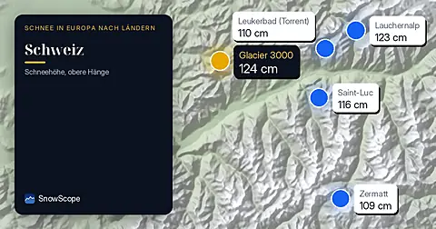
Glacier 3000 führt die Schweiz mit 124 cm an, nachdem in 72 Stunden 128 cm Schnee gefallen sind. Die Schneebedeckung sprang am 20. November auf 64% im ganzen Land.

Les Arcs führt mit 166 cm in den oberen Höhenlagen an. Schneefall bis Sonntag. Die besten Pisten sind hoch und nordausgerichtet. Daten vom 20. November.

Region, Daten, Budget und Prioritäten wählen; jedes Skigebiet wird mit dem wahrscheinlichen Schnee zum Start, Skipass, Hotel und Essen pro Person, buchbaren Chalets und einem Spielmodus gereiht.

Alpine Tagespässe ab 36 EUR: neun Skigebiete im Vergleich nach Preis, Pistenkilometern und dem Schnee, den sie normalerweise bieten, um den besten Skitag für dein Geld zu finden.

Tagespässe in den Pyrenäen ab 46 EUR: sechs Skigebiete in Frankreich, Spanien und Andorra im Preisvergleich, dann im Vergleich der Schneelage, die dort im Dezember und Januar üblich ist.
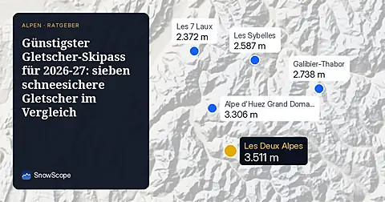
Gletscherskifahren ab 68 EUR am Tag: Wir haben sieben Gletscher in Frankreich, Österreich, Deutschland und der Schweiz nach Preis und nach dem Schnee verglichen, den sie im Dezember normalerweise bieten.

Sechs Tage Skifahren ab 191 EUR: Wir haben zehn günstige Skiwochen in Europa nach Preis sortiert und dann 46 vergangene Winter geprüft, um zu sehen, wo der Schnee zuverlässig ist.

Von 20 EUR am Eröffnungswochenende bis zu 6-Tages-Pässen vor Weihnachten: ein Kalender der günstigsten Saisonstart-Angebote in den Alpen für 2026, mit dem Schnee, den du dabei erwarten kannst.
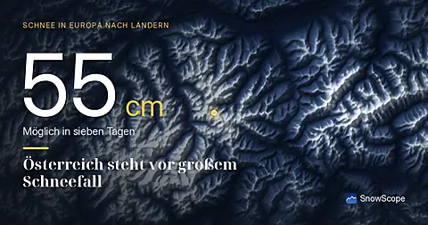
Österreichs Schneedecke ist diese Woche auf 48 Prozent angewachsen. Ein bedeutender Sturm kommt am 23. November, mit bis zu 55 cm Neuschnee in der kommenden Woche.
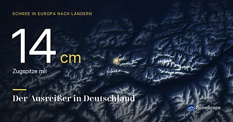
Zugspitze führt deutsche Skigebiete mit 53 cm am 19. November an. Die Schneedecke wächst; in der nächsten Woche sind 38 cm möglich.
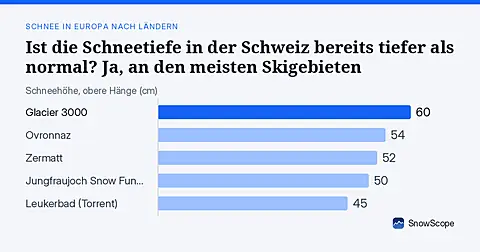
Die Schneehöhen in der Schweiz am 19. November liegen weit über dem Durchschnitt. Glacier 3000 verzeichnet 60 cm, mehr als das Doppelte der typischen Tiefe für diesen Zeitpunkt. In der nächsten Woche kommen bis zu 125 cm hinzu.

Deutsche Berge bekommen bedeutende Schneefälle über sieben Tage, bis zu 29 cm möglich. Daten vom 18. November.

Zermatt hat heute in den oberen Höhen 47 cm, 690% über dem November-Median. Die 0°C-Grenze bleibt bis Freitag über 2.200 m.

Österreichs Gletscher liegen nach 14 cm Neuschnee in den letzten 72 Stunden vorn. Die Schneebedeckung ist bis zum 18. November auf 18.140 km² angewachsen.

Schneebericht für 18. November: Zermatt führt die Schweizer Skigebiete mit 47 cm in den Höhenlagen an. Neuschnee erreicht die Alpen.
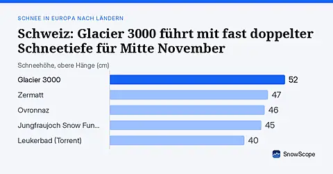
Schweizer Skigebiete haben 142% der normalen Schneebedeckung für den 18. November. Glacier 3000 führt die Rangliste mit 52 cm an, vor großen Schneefällen, die prognostiziert sind.

Alpen-Schneeprognose 18. November: 110 cm erwartet in Orelle, 105 cm in Les Grands Montets. Bester Schnee kommt Donnerstag und Freitag.

Schnee in Bayern und im Schwarzwald am 17. November: Schneehöhen oben, Neuschnee, die nächsten drei Tage und der Tipp für einen Kurztrip.
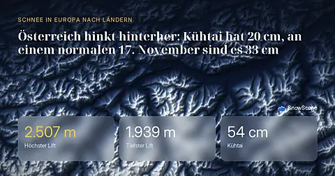
Österreich hinkt hinterher: Kühtai hat 20 cm, an einem normalen 17. November sind es 33 cm

Neuschnee ist ungleichmäßig über die Schweizer Berge verteilt. Die Walliser Alpen erhielten 92 cm in drei Tagen; das Berner Oberland 54 cm. Daten vom 17. November.

Der Schnee schrumpft in Deutschland: 840 km² weniger als vor einer Woche

215 von 277 österreichischen Skigebieten haben Frühsaison-Schnee am 16. November. Die Schneegrenze liegt bei 1.500 m; erwarte 50 cm in der nächsten Woche.
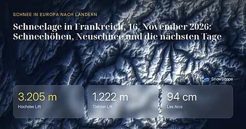
Schnee in Frankreich am 16. November: Schneedecke, Neuschnee, Schneehöhe nach Höhe, die nächsten Tage und die besten Skigebiete.

Die Alpen in Deutschland zeigen gerade 43 % der normalen Schneetiefe in den überwachten Skigebieten am 16. November, deutlich hinter dem Plan für den Saisonstart.
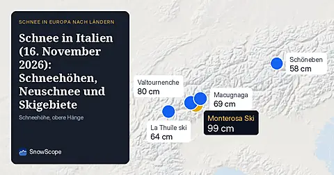
Schnee in Italien am 16. November: Schneedecke, Neuschnee, Schneehöhe nach Höhe, die nächsten Tage und die besten Skigebiete.
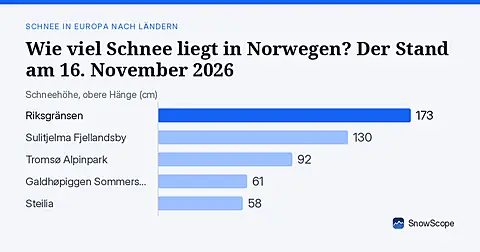
Schnee in Norwegen am 16. November: Schneedecke, Neuschnee, Schneehöhe nach Höhe, die nächsten Tage und die besten Skigebiete.
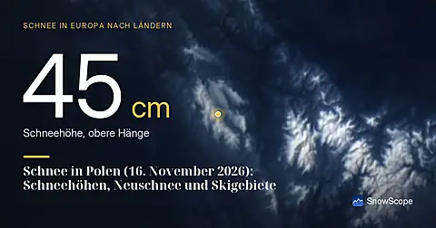
Schnee in Polen am 16. November: Schneedecke, Neuschnee, Schneehöhe nach Höhe, die nächsten Tage und die besten Skigebiete.

In der kommenden Woche sammelt sich Frischwasser in den Hochalpen an.

In Andermatt (2963 m) zeigt die Prognose 75 mm Niederschlag vom 15. November bis 20. November. In den nassen Stunden liegt die Nullgradgrenze bei etwa

Beaver Mountain bietet Tageskarten zum Festpreis von 75 Dollar ohne Zuschlag in der Hochsaison. Anfang Dezember ist die Schneedecke oft dünn; ziel auf die Monatsmitte oder später ab, wenn der Schnee zuverlässiger ist.

Bridger Bowl verlangt 86 $ online für 2026/27. Mittelhang hat am 15. Dezember in der Hälfte der Winter 50 cm; in der Weihnachtswoche steigen die Chancen auf 78 %.

Das hochgelegene Skigebiet in Colorado hält sein Wochentag-Skiticket für 2026-27 bei 49 Dollar; die Schneehöhe in der Mittellage erreicht Mitte Dezember in einem typischen Winter 66 cm. Daten vom 13. November 2026.

Sunlight nahe Glenwood Springs ist im Dezember ein Glücksspiel in der Frühsaison. Mitte Dezember kannst du mit 67 cm in der Mittelhöhe rechnen, wobei aber nur 72% der Winter diese Tiefe erreichen.
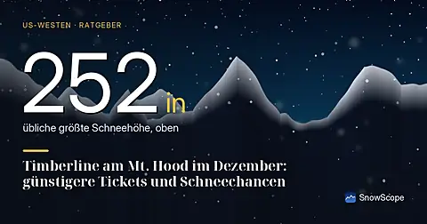
Timberline hat Mitte Berg am 15. Dezember typischerweise 132 cm Schnee. Die oberen Hänge erreichen 147 cm. Tageskarten beginnen ab 129 USD in der Nebensaison.

Von Ski Cooper (49 $ unter der Woche, 99 $ am Wochenende) bis Mt. Baker (98,80 $ gegen 115,42 $): geprüfte Dezember-Preisunterschiede an sieben US-West-Skigebieten, mit ihren Schneechancen.

Indy Base Pass 419 $, Indy+ 469 $, zwei Tage in jedem Partnergebiet. Wir haben ihn den geprüften Dezember-Tagespreisen von sieben Indy-Gebieten gegenübergestellt, samt ihrer Schneechancen.

Das Midweek-Ticket bei Lookout Pass kostet 63 Dollar, wenn du es voraus reservierst. Mitte Dezember hält der obere Berg normalerweise 30-37 Zoll (75-95 cm). Daten vom 13. November 2026.

Lokales Skigebiet bei Missoula in knapp 2.296 m Höhe mit Tageskarten für 78 Dollar unter der Woche. Mittlere und obere Hänge haben Mitte Dezember typischerweise 76–93 cm Schnee. Daten vom 13. November 2026.

Schweitzers 3er-Pass gibt drei Tage für 249 Dollar auf einem Grat, der von 1.221 m bis 1.949 m ansteigt. Die Schneehöhe auf halber Höhe am 15. Dezember beträgt durchschnittlich 90 cm, wobei 85 % der Winter über 50 cm liegen.

Krvavec auf Mittelhöhe hat am 15. Dezember in 46 Wintern typisch 13 cm Schnee, aber in 11 davon blanken Boden. Tagesticket EUR 47.
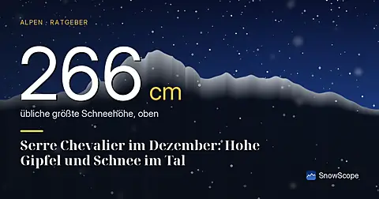
Skifahre auf 157 km markierten Pisten in Serre Chevalier, wo die Bergspitze bis Mitte Dezember eine 100 %ige Schneewahrscheinlichkeit hat.

Turracher Höhe hat am 15. Dezember typischerweise 23 cm in der Mittellage, doch nur 39% der Winter erreichen dort Mitte Dezember 30 cm. Daten vom 13. November 2026.

Hochkar auf Mittelhöhe hat am typischen 15. Dezember 38 cm, und in 63 % der Winter gab es in dieser Woche 30 cm oder mehr. Tageskarten ab EUR 32,90 an ruhigen Tagen.

Idre Fjälls Dezember-Schneechancen verbessern sich nach Mitte des Monats deutlich. Am 13. November liegt die typische Schneehöhe auf Mittelhang am 15. Dezember bei 32 cm.

Brighton führt Anfang Dezember mit 37 Zoll (94 cm) typischem Schnee am 15. an. Wolf Creek zieht bis Weihnachten nach. Preise und Zuverlässigkeit verglichen.

Zehn europäische Skigebiete im Ranking für den Dezember, angeführt von Les 2 Alpes mit 75 cm Schnee auf mittlerer Höhe.

Brundage Mountain bietet zuverlässigen Frühsaisonschnee in der Nähe von McCall, Idaho. Die typische Schneehöhe in der Mitteldokumentation erreicht bis Mitte Dezember 77 cm, Tickets gibt es ab 65 Dollar an ausgewählten Tagen.

Boí Taüll startet auf 2039 m und schlägt Baqueira Beret beim Preis für den Tagesskipass, obwohl der Schnee Anfang Dezember Geduld erfordert.

Sälen im Dezember: 28 cm an einem typischen 15. Dezember und 48 % der Winter mit 30 cm Mitte Dezember, weniger als in den 1980ern; Trysil nebenan schneidet besser ab.

Snow King liegt am Fuß von Jackson. Mitte Dezember hält sich die Mittelhöhe meist bei 71 cm. Datenstand: 13. November 2026.

Orcières Merlette bietet eine hohe Basis auf 1.826 m und einen 6-Tage-Pass ab 227 EUR, was es zu einer zuverlässigen Wahl für einen Skiurlaub im Dezember macht.

Lohnt sich Alpe d'Huez für Dezember 2026? Wir prüfen die Schneechancen, den Startpreis von 58,00 EUR und vergleichen es mit Les 2 Alpes.
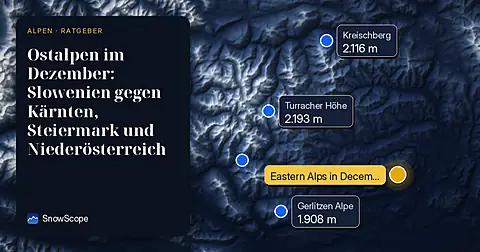
Sloweniens Skipässe sind die günstigsten (Krvavec 205 EUR für 6 Tage), doch Naturschnee im Dezember ist dort selten; Lachtal, Hochkar und Mölltaler Gletscher schneiden besser ab.

Loveland verkauft online-Tickets für 60 $ bis 13. Dezember, dann 159 $ ab 14. Dezember. Frühdezember-Schneefall beträgt durchschnittlich 50 cm auf Mittelhöhe, die Basis ist aber nur halb so tief wie mitten im Winter.

Cauterets bietet 25 km Pisten für 46 EUR, aber unsere Schnee-Historie zeigt, dass die besten Chancen auf eine Schneedecke in der letzten Dezemberwoche liegen.

Lachtal kostet EUR 62 pro Tag, Kinder unter 7 Jahren fahren kostenlos. Die Mittelbahn hatte ab Dezembermitte in 72 % der Jahre 30 cm oder mehr. Schneehöhe vom 13. November 2026.

White Pass belohnt frühe Buchungen unter der Woche. Mitte Dezember liegt die Schneehöhe auf Mittelhang typischerweise bei 102 cm. Daten vom 13. November 2026.

Fahre diesen Dezember auf den 131 km Pisten der Forêt Blanche mit einem 6-Tage-Pass für 298 EUR.

Der 6-Tage-Pass in Ruka kostet EUR 265. Die Schneeaussichten steigen von 39% Anfang Dezember auf 85% in der Weihnachtswoche. Plane ab Mitte des Monats.

Bei Monterosa Ski kostet der Tagespass online 40,00 bis 71,00 EUR. Im Dezember liegt der Schnee oben: üblich 124 cm auf 3.030 m, 6 cm auf 1.207 m.

Wolf Creek hat typischerweise am 15. Dezember 87 cm in der Mitteltstation. Spitzenpreise beginnen am 20. Dezember. Daten: 13. November 2026.

Am 15. Dezember auf Fellhorn/Kanzelwand: 63 cm auf 1965 m Gipfel, 30 cm am Berg, nur 10 cm auf 918 m Tal. Plane entsprechend.

Plane deinen Dezember-Trip 2026 nach Les Orres, indem du die wöchentlichen Skipasspreise mit unserer Schneehistorie aus 46 vergangenen Wintern vergleichst.

Hemavans Mittelhöhe hat am typischen 15. Dezember 82 cm Schnee. In allen 46 Wintern gab es Mitte Dezember 30 cm oder mehr. Daten vom 13. November 2026.

Brightons mittlere Höhenlage hält typisch 94 cm am 15. Dezember. Datenstand 13. November 2026.

Vergleiche Grandvalira und spanische Skigebiete im Dezember 2026 bezüglich Schneehöhen, Lift-Höhen und Preisen ab 49,00 EUR.
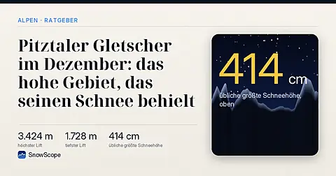
Pitztaler Gletscher hält Dezemberschnee besser als die meisten Alpengebiete: 87 cm auf Mittelstufe Mitte Dezember, jeder Winter der letzten Jahre über 30 cm. Datenstand 13. November 2026.
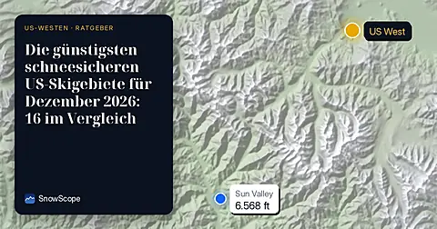
16 US-Skigebiete nach Schneewahrscheinlichkeit am 15. Dezember und Tagesskipass-Preis für Erwachsene gereiht. Grand Targhee führt mit 100 % Wahrscheinlichkeit; fünf Gebiete kombinieren über 80 % Wahrscheinlichkeit mit Tickets unter $80. Daten vom 13. November 2026.

Für eine günstige Skiwoche mit der Familie im Dezember in Astún-Candanchú solltest du Ende Dezember anpeilen, wenn die oberen Pisten in 67 % der vergangenen Winter guten Schnee haben.

Nur Zugspitze und oberes Fellhorn halten zuverlässig 30 cm bis Mitte Dezember. Tiefere bayerische Berge sind günstiger, aber viel unsicherer. Daten vom 13. November 2026.

Puy-Saint-Vincent bietet einen 44 EUR Erwachsenen-Tagespass und soliden Dezember-Schnee in der Höhe, hier im Vergleich zum großen Nachbarn Serre Chevalier.

Grand Targhee bietet zuverlässigen Dezemberschnee in allen Höhenlagen. In der Mittelhöhe liegen typischerweise 118 cm bis Mitte Dezember vor, und in 100% der Winter wird die 50-cm-Marke erreicht oder überschritten. Daten vom 13. November 2026.

Oppdals Talstation hat am typischen 15. Dezember 60 cm Schnee, in 93% der Winter liegen Mitte Dezember mindestens 30 cm. Daten aus 46 Wintern.

Grimentz-Zinal bietet 71 km Pisten und verlässlichen Schneesicherheit in großer Höhe für Ihre Dezember-Reise, mit 6-Tages-Pässen für CHF 339,00.

Österreich vor Weihnachten: Galtür 258 EUR und Kühtai 269 EUR für 6 Tage, mit 30 cm in über 90 % der Winter; Gletscher kosten mehr, kleine Hügel sind ein Risiko.

Planst du eine Reise nach Baqueira Beret im Dezember? Sieh dir unsere Schnee-Historie an, Ticketpreise ab 70,00 € für einen Tag und den Vergleich zu Astún-Candanchú.
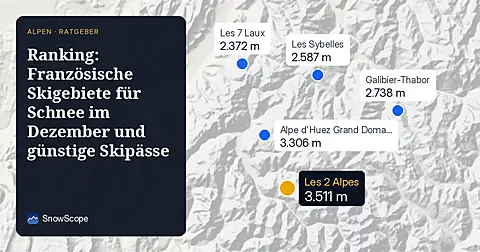
Wir bewerten französische Skigebiete nach der Schneewahrscheinlichkeit im Dezember und den Skipasspreisen, beginnend bei 36,00 EUR für einen Tagespass für Erwachsene in Les Karellis.

Der Dezember bringt nur 18 cm typische Schneehöhe auf Mittelhang in Oukaimeden, gegenüber 53 cm im März. Die Frühjahrsaison ist dünn, aber möglich. Daten 13. November 2026.

Galtürs Mittelstation hält am typischen 15. Dezember 55 cm. Nebensaison-Skipässe kosten EUR 55,50 bis 18. Dezember. Daten aus 46 Wintern, 1980–81 bis 2025–26.

Geilos Mittellage bleibt in 96% der Dezember-Winter befahrbar. Typische Schneehöhe am 15. Dezember: 42 cm Tal, 57 cm Mitte, 68 cm Gipfel. Tageskarte ab NOK 590.

Grandvalira wird oft als günstiges Skigebiet für Dezember verkauft, doch der Naturschnee an der Talstation liegt in den vergangenen Wintern im Schnitt bei nur 9 cm.

Am 15. Dezember zeigt Hemsedal 32 cm in der Talstation, 70 cm auf Mittelberg und 106 cm am Gipfel. Die Höhe ist entscheidend.

Am 15. Dezember hat Hintertux auf 3245 m 98 cm Schnee in 46 Wintern Geschichte. Jeden Winter gab es in der Woche vor Weihnachten dort oben 30 cm oder mehr.

Vergleiche die Schneechancen im Dezember und geprüfte Skipasspreise ab 40,00 EUR in italienischen Skigebieten für deinen Wochenendtrip mit dem Auto.

Kühtais Basis auf 1939 m bleibt im Dezember zuverlässig schneesicher. Am 15. Dezember typischerweise 60 cm in der Basis, 72 cm auf Mittelhöhe, 112 cm oben. Nebensaison-Sechstagespass EUR 269 bis 18. Dezember.

Les 2 Alpes reicht bis auf 3.511 m für viel Schnee im Dezember 2026, mit einem 6-Tage-Skipass für Erwachsene für 266,50 EUR.

Les Karellis bietet 45 km Pisten und einen 6-Tage-Skipass für Erwachsene für 191,00 EUR mit einer 98 %igen Schneewahrscheinlichkeit auf mittlerer Höhe Ende Dezember.

Levis Dezemberschnee hat sich im Laufe der Zeit verfestigt. Letzte 15 Winter: 100 % der Weihnachtswochen hatten 30 cm oder mehr. Typische Tiefe 15. Dezember: 38 cm. Daten 13. November 2026.

Fahr Ski in Livigno für 51,50 EUR pro Tag vor dem 18. Dezember, wenn der Schnee am Gipfel in 100 % der vergangenen Winter 30 cm erreicht.
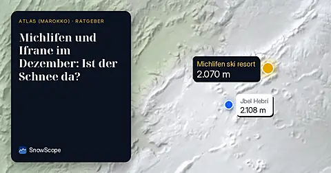
Am 15. Dezember in Michlifen sind 89% der Winter fast schneefrei. Die beste Chance kommt nach einem Sturm, nicht nach dem Kalender. Daten vom 13. November 2026.

Montgenèvre hat im Dezember üblicherweise 56 cm Schnee an der Talstation und bietet Wochenendfahrern damit eine bessere Schneelage als Sestriere auf der anderen Seite der Grenze.

Skifahren in Obertauern im Dezember: 43 cm an einem typischen 15. Dezember an der Mittelstation, 6-Tage-Skipass vor Weihnachten 331 EUR.

Am Skigebiet Oukaïmeden in Marokko bringt ein typischer 15. Dezember nur 16 cm in der Mittelhöhe. SnowScope zeigt Chancen aus 46 Wintern Daten.
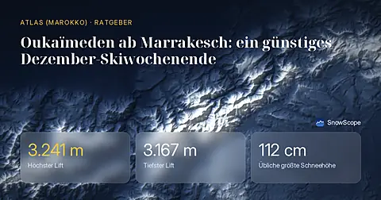
Oukaïmeden liegt 50 km von Marrakesch entfernt. Dezemberschnee ist dünn und unberechenbar: Plane um Stürme herum, nicht nach dem Kalender. Daten vom 13. November 2026.

Am 15. Dezember hat Oukaïmeden auf Mittelhöhe 16 cm gegenüber Val Thorens 89 cm. Wir haben Liftpreise überprüft. Daten vom 13. November 2026.

Pila oberhalb von Aosta bietet einen günstigen Tagesskipass für 60,00 EUR und zuverlässigen Schnee im Dezember auf den oberen Pisten.

Die Lifte in Saas-Fee erreichen 3.556 m, wo unsere Schnee-Historie zeigt, dass 100 % der vergangenen Winter bis Mitte Dezember mindestens 30 cm Schnee hatten.

Schneetiefe in Mittelhöhe erreicht in 83–100 % der Dezember-Winter in Skandinavien 30 cm. Festpreise in Finnland; dynamische Preise in Norwegen und Schweden. Daten aus 46 Wintern, 13. November 2026.

Dezember-Schneechancen aus 46 Wintern und geprüfte Tagespreise: Ski Cooper 49 $, Les 3 Vallées 75,70 €, Oukaïmeden ohne offiziellen Tarif. Wo ein günstiger Dezember-Skitag funktioniert.
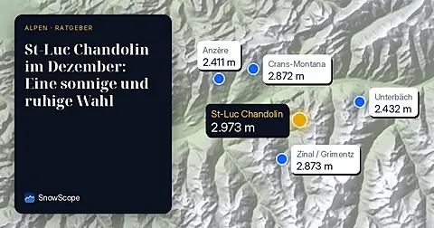
Entdecke die ruhigen Pisten von St-Luc Chandolin, wo die Schneehöhe auf mittlerer Höhe in 98 % der Winter Ende Dezember 30 cm erreicht.

Trysil im Dezember: 44 cm an der Mittelstation an einem typischen 15. Dezember, 83 % der Winter mit 30 cm Mitte Dezember; die Preise sind dynamisch, also früh buchen.

Valloire-Valmeinier bietet 131 km Pisten und eine 98 % Chance auf 30 cm Schnee auf halber Höhe bis Mitte Dezember.

Zugspitze-Gletscher hat am 15. Dezember typischerweise 122 cm Schnee auf 2.627 m; Garmisch-Classic-Spitze 57 cm. Gleicher Preis, unterschiedliche Schneedecke. Daten aus 46 Wintern.

Mölltaler Gletscher im Dezember: 66 cm am tiefsten Lift (2103 m) und 128 cm an der Mittelstation an einem typischen 15. Dezember; 6-Tage-Skipass Nebensaison 332 EUR.

Mt. Baker im Dezember: 46 in (116 cm) Schnee auf halber Höhe an einem typischen 15. Dezember, und ein 98,80-$-Ticket von Montag bis Donnerstag, das es nur am Tag selbst an der Kasse gibt.
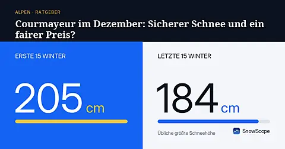
Kannst du dich als vorsichtiger Anfänger im Dezember auf Courmayeur verlassen, wenn es auf halber Höhe in unseren vergangenen Wintern im Schnitt 60 cm Schnee gibt?

Schneebericht in den Alpen, 14. November. Wenn du heute den meisten Schnee in den Alpen willst, schau nach Saint-Luc (Schweiz): etwa 110 cm weit …
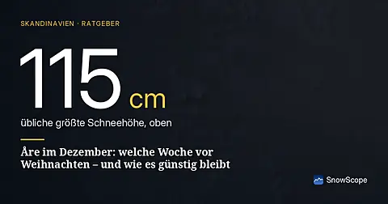
Buche 15.–21. Dezember in Åre für die besten Schneechancen vor den Weihnachtsmassen. 89 % der Winter hatten in dieser Woche 30 cm auf Mittelhöhe. Daten vom 13. November 2026.

Wo solltest du in den nächsten Tagen sein? Hier sind die Skigebiete mit dem meisten prognostizierten Neuschnee für die nächsten 24 Stunden und bis …

Der Gipfelfinder von SnowScope ist eine kostenlose Gipfel-App: Richte dein Handy auf die Berge und die App nennt dir die Gipfel, mit Höhe, Entfernung und Gehzeit. Unsere Tests: 98 % der angezeigten Gipfel sind wirklich in Sicht, und auf echten Fotos korrigierte sie Kompassfehler von bis zu 105° auf 0,15°. Kostenlos mit 3 Namen, alle Gipfel einmalig für 0,99 €.

Von jetzt bis zum 16. November erwarten wir 13 in (34 cm) in Bear Valley, 13 in (34 cm) in Dodge Ridge und 13 in (33 cm) in Badger Pass. Ein Wort zu …

Der Pistenplan von Sillian (Hochpustertal) mit unserer Schneeschicht am 13. November 2026: 8,6 cm am Gipfel auf 2399 m, untere Hänge aper, und eine Woche mit Regen und Schnee gemischt, Schneefallgrenze bei 1.800 bis 2.000 m.

Schneelage in Silvretta Montafon am 13. November 2026: 4,5 cm am Gipfel auf 2421 m, Mittelstation und Tal noch aper, diese Woche rund 40 cm in der Höhe, im Tal Regen unter 1.500 m.
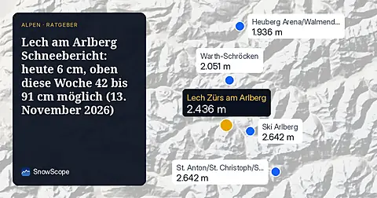
Schneebericht Lech Zürs am 13. November 2026: rund 6 cm oben (2436 m) und an der Mittelstation, aper in Lech auf 1430 m. Diese Woche oben 42 cm nach unserer Prognose, bis 91 cm nach anderen, Regen und Schnee gemischt um 1400 m. Und warum Lech die schneereiche Seite des Arlbergs ist.

Was du anziehst, was du einpackst und wann du fährst, Skigebiet für Skigebiet. …
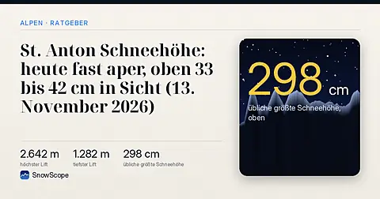
St Anton hat am 13. November 1 cm an der Spitze und 5 cm auf Mittelhang. Die kommende Woche bringt 33 bis 42 cm, aber Regen im Tal.
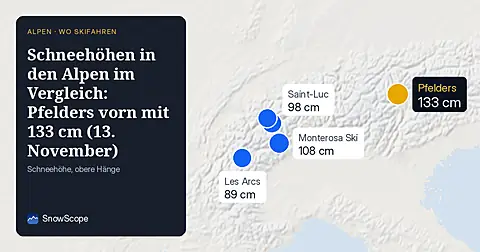
Die Schneefläche ist von 39.090 km² am 11. November auf heute 76.100 km² gewachsen, und unsere Prognose ergibt 57.910 km² am 16. November: Mehr Boden …

Die Skigebiete im Atlas halten heute keinen Schnee auf ihren Pisten. Schnee ist nur auf den höchsten Gipfeln gespeichert: etwa 40 km² Boden, bis zu …

Schneebericht Obergurgl am 13. November 2026: rund 20 cm oben (3024 m), 5 cm an der Mittelstation, schneefrei an den untersten Liften (1784 m). Schneeprognose der Woche: 34 cm oben, 21 cm unten, Schneefallgrenze um 1700 m. Dazu der übliche Saisonstart.

Die Schneehöhe in Sölden am 13. November 2026: rund 9 cm oben auf 3245 m, 5 cm an der Mittelstation, nichts im Tal auf 1346 m. Diese Woche 25 cm oben, Regen unter etwa 1620 m. Gletscher gegen Dorf, dazu 46 vergangene Winter.

Die Schneehöhe in Chamonix am 13. November 2026, Höhe für Höhe: nichts im Talboden, 1 cm auf 2001 m, 12 cm oben am Brévent-Flégère (2486 m), 5 bis 24 cm oben an den Grands Montets (2768 m). Rund ein Meter in der Höhe diese Woche erwartet, Regen im Tal. Wie tief es in Chamonix üblicherweise wird, aus 46 Wintern.

Schneehöhe in Ischgl am 13. November 2026: rund 5 cm oben (2868 m), 4 cm an der Mittelstation, nichts im Tal auf 1352 m. Diese Woche bis zu 42 cm am Grat, im Paznaun Regen unter etwa 1570 m. Dazu Tal und Grat in 46 vergangenen Wintern.

Schneebericht Les Menuires vom 13. November 2026: 28 cm am Gipfel (2838 m), nichts liegt auf 2112 m oder 1386 m. Etwa 80 cm am Gipfel in sieben Tagen erwartet, Schneefallgrenze um 1500 bis 1700 m. Warum Val Thorens, 450 m höher im selben Tal, schon mehr hat.

Neuschnee in La Grave: 61 cm in den letzten 72 Stunden, davon 3 cm in den letzten 24. Unser Schneemodell sieht jetzt etwa 78 cm in den oberen Hängen. …

Zwischen 1.380 m und 3.410 m: Dort sieht unsere Prognose die Nullgradgrenze in Westkanada in den nächsten Tagen. In den wärmsten Stunden steigt die …
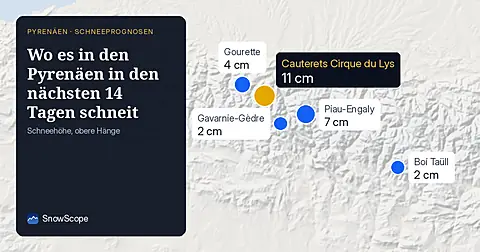
Die Karten von heute blicken zwei Wochen voraus in den Pyrenäen, 13. November bis 26. November. Sie stammen aus die beiden Prognosen, die zwei …

Schneebericht im Atlas (Marokko), 12. November. Skigebiete im Atlas heute: kein Schnee auf den Pisten. Schnee nur auf den höchsten Gipfeln: etwa …

Die Sonnenseite des Kleinen Sankt Bernhard in Zahlen.

Am 12. November liegt noch kein Schnee auf Oukaïmeden. Die Gipfel des Atlas sind kahl; die Wintersaison erreicht ihren Höhepunkt normalerweise im März mit 58 cm an der Spitze.

Schneefläche: 45.820 km² am 9. November, heute 38.440 km², 46.730 km² erwartet für den 14. November. Die Karte wird weniger weiß. Glacier 3000: …

Liegt mehr Schnee als vor einem Jahr? Wir haben heute mit dem 11. November des letzten Winters in 4 Skigebieten in den Pyrenäen verglichen: 0 davon …

Sieh, wo sonst noch Schnee erwartet wird.
Wie tief der Schnee kam, wann er ging und wie sich dieser Winter mit 2008-09 und den trockenen Jahren vergleicht.

Verglichen wurde der Schnee am 10. November mit der größten Schneehöhe jedes Winters, in 46 Skigebieten über 46 Winter. Ein schneereicher Start hilft, aber weniger, als viele Skifahrer denken.

Ein Sturm am 4. November brachte 8 bis 13 inches Neuschnee an fünf hoch gelegenen Stationen in Colorado nahe Aspen. Fünf Tage später war die Hälfte weg. Was das für Powder-Tage bedeutet.

Drei magere Winter in Folge endeten 2025-26; dieser Herbst hat normal begonnen.
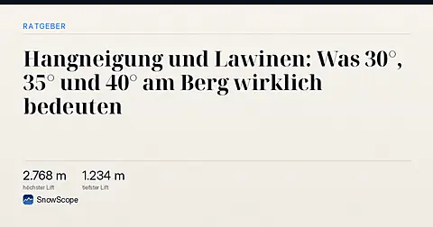
Eine Neigungskarte von Les Grands Montets und sieben weiteren Skigebieten zeigt, wie viel Gelände steiler als 30°, 35° und 40° ist – und warum diese Grenze für Lawinen zählt.

In 24 von 46 Wintern hatten die Skigebiete auf der italienischen und südfranzösischen Seite der Alpen einen relativ stärkeren Winter als die Nordseite. Die Grafik, die großen Jahre und das Wetter dahinter.
Schnee im Dezember hängt vor allem von der Höhe ab. 46 vergangene Winter in 676 Alpen-Skigebieten zeigen, wie viel Schnee am 1., 15. und 22. Dezember zu erwarten ist, von unter 1.200 m bis über 2.400 m.
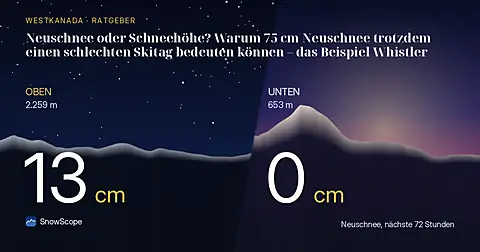
Whistler Blackcomb bekam in einer Woche 75 cm Neuschnee am Gipfel, dann einen warmen Sturm mit 124 mm Wasser. Ein einfacher Leitfaden zu Unterlage, Neuschnee, Regen und Harschdeckel.

Ein günstiger 3-Tage-Plan am Comer See im Dezember mit echten Preisen 2026-27: Züge, Schiffe, Standseilbahn und ein Skitag in Piani di Bobbio oder Madesimo, die Ersparnis gegenüber Cortina und die Chance auf Schnee zu Weihnachten.

Der Schnee heute in Livigno, was die europäische Saisonprognose für den Dezember sagt, und warum die Höhe zu Weihnachten gegen einen milden Monat gewinnt.

Schnee heute in Cortina, die europäische Saisonprognose für Dezember und unsere Chancen auf weiße Weihnachten in den östlichen Dolomiten.

Dolomiten-Vorhersage für Dezember 2026: 1,7 °C wärmer, etwas feuchter, 30 cm Schnee bis Jahresende, Weihnachten in der Mittelhöhe weiß. Daten vom 10. November.
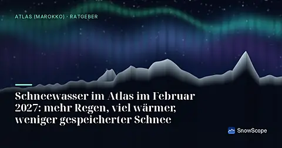
Wie viel Wasser der Schnee im Atlas im Februar 2027 halten könnte: Die europäische Saisonprognose ist etwa 3 °C wärmer und im Westen und Süden nasser, die Schneechancen in Marokkos Flussgebieten bleiben gering.
Januarprognose für Marokkos Atlas: 69 Millionen m³ Schneewasser erwartet, deutlich unter dem Durchschnitt von 206. Daten vom 10. November 2026.

Bou Iblane bleibt bis in den Dezember hinein schneefrei. Saisonprognose: 2,3°C wärmer als üblich, nur 22 cm Neuschnee erwartet, 0 cm Schneebelag am 31. Dezember. Daten: 10. November 2026.

Jeden Tag listen wir die Skigebiete, die den meisten Neuschnee bekommen sollen, für die nächsten 24 Stunden und bis zum 13. November, in Europa, …
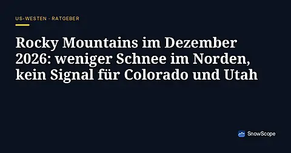
Saisonausblick für die Rockies: wärmerer Dezember bevorsteht, Schneefall nahe dem Normalwert, aber der Norden deutet auf weniger Schnee, während Colorado und Utah unentschieden bleiben. Daten vom 10. November 2026.

Der Dezember in den Südalpen wird wärmer und nasser als üblich, aber die Schneehöhe zum Jahresende sollte nahe am Normalwert bleiben. SnowScope-Analyse vom 11. November 2026.

Oukaimeden erwartet einen warmen Dezember mit 13 cm Schneeprognose am 31. Dezember, deutlich unter den üblichen 26 cm. Daten vom 10. November 2026.

Chamonix startet den Dezember mit 27 cm in der Höhe, aber dünne Schneedecke darunter. Wärme und Nässe drücken gegeneinander; erwarten Sie nahezu normalen Dezemberschnee. Daten vom 10. November 2026.

Vail in Zahlen: übliches Maximum von etwa 64 in (162 cm) an der Mittelstation in 46 vergangenen Wintern, März am schneereichsten, dazu Gelände, Anreise, Sicherheit.

Zermatt in Zahlen: wo der Schnee hält, die sichersten Monate und die Anreise ins autofreie Dorf, aus 46 vergangenen Wintern.

Steamboat, Colorado, für Familien: was für Kleinkinder, Schulkinder, Teenager und Eltern passt, mit dem Schnee aus 46 vergangenen Wintern auf drei Höhen.
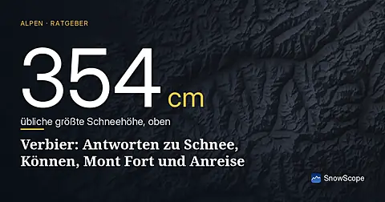
Ist Verbier etwas für Anfänger? Wann ist der Schnee am besten? Wie kommt man hin? Antworten zu den 4 Vallées und 46 vergangenen Wintern.

Wie du den ersten Tag in Park City Mountain, Utah, verbringst und wann du fährst: Unsere Schneehistorie gibt etwa 71 in (180 cm) als übliches Maximum an der Mittelstation in 46 vergangenen Wintern.
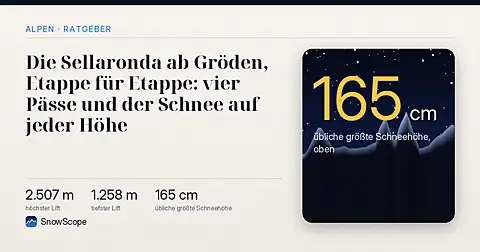
Die Sellaronda ab Wolkenstein (Sëlva) in Gröden: Grödner Joch, Campolongo, Pordoi und Sellajoch der Reihe nach, mit unserer Schneehistorie von 46 vergangenen Wintern.

Mt Baker, Washington: etwa 133 in (337 cm) übliches Maximum an der Mittelstation in 46 vergangenen Wintern, ein Schneefall-Weltrekord, keine Unterkunft am Berg.
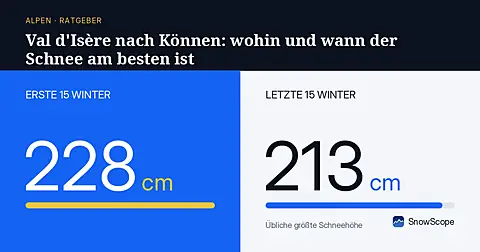
Val d'Isère und der Espace Killy für Anfänger, Fortgeschrittene und Könner, mit dem Schnee aus 46 Wintern auf drei Höhen.

Mammoth Mountain nach Saison planen: etwa 93 in (235 cm) übliches Maximum an der Mittelstation in 46 vergangenen Wintern, März am tiefsten, lange Frühjahre, schwankende Winter.

Kitzbühel ist berühmt und tief gelegen. Was 46 vergangene Winter über den Schnee auf 762 m, 1.377 m und 1.993 m sagen, was sich geändert hat und welche Wochen die sicherere Wahl sind.

Jackson Hole hält Schnee bis tief in den Frühling auf seinen hohen Gipfeln. Wir haben sechs verbreitete Aussagen gegen 46 Winter Schneegeschichte überprüft. Daten von November 2026.

SnowScope überprüft seine tägliche Schneekarte gegen 2.012 Bergstationen. Am 9. November 2026 lag die Karte innerhalb von 7,7 cm typischem Fehler und war 88% der Zeit richtig.

Zehn praktische Punkte für eine Skireise nach Livigno: Anreise, Kälte, zollfreie Geschäfte, die zwei Talseiten und die beste Schneezeit, aus 46 vergangenen Wintern unserer Schneehistorie.

Im Winter nach Telluride, Flughafen für Flughafen: Telluride Regional, Montrose, die Fahrt auf dem Highway 145 mit Colorados Traktionsgesetz und die kostenlose Gondel nach Mountain Village.

Whitewater liegt in einer durchgehend verschneiten Mulde der Selkirks in der Nähe von Nelson. In der Mittelhöhe erreichen typische Gipfel 165 cm. So verläuft ein Sturmtag auf einem Skiberg mit 670 m Höhenunterschied.

Les Arcs hat vier Dörfer in verschiedenen Höhen, jedes mit eigener Schneelage und Charakter. Wähle das Richtige für deinen Winter.

Snowbird liegt am oberen Ende des Little Cottonwood Canyon. Wir erklären die Haftungsregel, den Straßenzustand, den Skibus und warum die Anfahrt für die Schneehöhe wichtig ist.

Whistler Blackcomb für jedes Können, mit unserer Schneehistorie: etwa 370 cm übliches Maximum an der Mittelstation in 46 vergangenen Wintern, März und April am tiefsten.

Von den Walsern zum Weißen Ring: die Daten, die Lech Zürs geprägt haben, danach unsere Schneehistorie damals und heute, die ersten fünfzehn von 46 vergangenen Wintern gegen die letzten fünfzehn.

Palisades Tahoe Olympic Valley liegt 42 Meilen von Reno entfernt. Der Winterzugang hängt von Schneeketten-Regelungen, Parkplatzbuchungen und der Vorhersage ab. Daten von 8. November 2026.

Eine praktische Packliste für Stowe, Vermont: Schichten, Gesichtsschutz, Skibrille, scharfe Kanten und Wärmepads, verknüpft mit dem Schnee aus 46 vergangenen Wintern am Mount Mansfield.
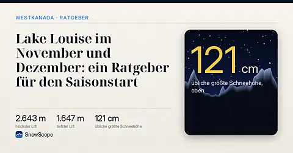
Skifahren in Lake Louise zu Saisonbeginn: warum es früh losgeht, wie der Schnee im November und Dezember in 46 vergangenen Wintern meist aussah und wie man auf dünner Unterlage fährt.

Was an La Grave stimmt, dem Freeride-Berg unter der Meije: Gelände, Sicherheit, Schnee pro Monat und Trend, aus 46 vergangenen Wintern.

Big Sky, Montana, anschaulich: 5.850 Acres unter dem Lone Peak, und Schnee, der in 46 vergangenen Wintern nahe dem Gipfel etwa fünfmal so tief war wie im Tal.
Grandvalira liegt in Andorras Haupttal. Du erreichst es auf der Straße aus Spanien oder Frankreich, mit Flughäfen 176–260 km entfernt und kostenlosem Parken in einigen Sektoren.

Magic Mountain Ski Area im südlichen Vermont liegt auf dünnem Naturschnee. Die maximalen Tiefen an der Basis betragen 21 in (54 cm); an der Spitze 26 in (67 cm). Daten aus 46 vergangenen Wintern, November 2026.
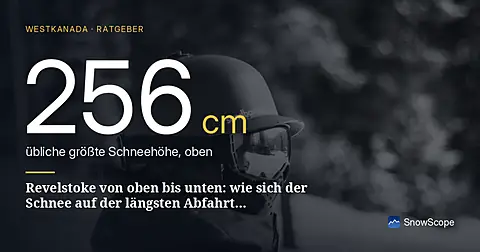
Fahr Revelstokes ganzen Höhenunterschied erst im Kopf: der Schnee am Gipfel, an der Bergmitte und unten im Tal in 46 vergangenen Wintern, und wann jeder Teil am besten ist.

Sieben Tage in der Silvretta Arena, einer nach dem anderen: wo der Schnee liegt, wann man nach Samnaun fährt und was 46 vergangene Winter über Ischgls Schnee auf drei Höhen sagen.

Aspen Snowmass im Vergleich: Snowmass hat etwa 75 in (190 cm) übliches Maximum an der Mittelstation in 46 vergangenen Wintern, Aspen Mountain etwa 69 in (174 cm).

Gourette und Cauterets im Vergleich: Höhen, üblicher Schnee pro Monat, die besten Wochen und die Anreise, aus 46 vergangenen Wintern.

Mad River Glen, Vermont: Naturschnee, etwa 30 in (75 cm) übliches Maximum an der Mittelstation in 46 vergangenen Wintern, Februar am tiefsten. Drei Pläne für einen Tag dort.

Banff Sunshine Village Monat für Monat: etwa 100 cm an der Mittelstation in einem üblichen März in 46 vergangenen Wintern, oben ist der April am tiefsten, Saison bis Ende Mai.
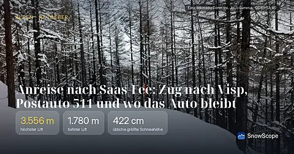
Saas-Fee liegt auf 1.780 m in einem autofreien Dorf. Du erreichst es mit dem Zug nach Visp und dann PostBus 511, oder du fährst über Lötschberg, Furka, Simplon oder das Rhônetal. Daten vom 8. November 2026.

Altas Mittelhang erreicht normalerweise etwa 276 cm. Unsere Schneegeschichte aus 46 Wintern beantwortet, wann du kommen solltest, welche Höhe zu dir passt, und warum die Straße wichtig ist. Daten vom 7. November 2026.

Alpe d'Huez liegt zur Sonne. So plant man den Tag nach Uhrzeit und Höhe, mit dem Schnee von 46 vergangenen Wintern von den tiefen Dörfern bis zum Pic Blanc.

Unsere 46-Winter-Reihe in den Alpen, 108 Punkte von 667 bis 3.872 m: überall weniger Schneetage, deutlich an 81 %. Was sich je Höhe änderte und warum.

Über 2.500 m in Marokko haben die Atlas-Winter seit 1980 pro Jahrzehnt 8,8 Schneetage verloren. SnowScope hat 46 Saisons analysiert.

Baqueira-Beret liegt im Val d'Aran, auf der Atlantikseite der Pyrenäen. Was das für den Schnee bedeutet, geprüft an 46 vergangenen Wintern im Vergleich mit La Molina, und wann man fahren sollte.

Bonneval-sur-Arc liegt auf 1.794 m im hohen Arc-Tal, im Winter durch den Iseran abgeschnitten. Die Schneehöhe reicht von 99 cm in der Talstation bis 335 cm am Berg. Daten aus 46 vergangenen Wintern, November 2026.

So verbringst du den ersten Skitag in Chamonix, von den Grands Montets über Argentière bis zur richtigen Stunde für jeden Hang, mit 46 Wintern Schneedaten.

Cortina d'Ampezzo auf drei Arten: Tofana, Faloria-Cristallo und Cinque Torri-Lagazuoi, mit 46 Wintern Schneedaten auf drei Höhen.
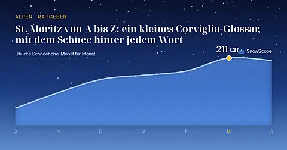
Chantarella, Marguns, Piz Nair, White Turf: die Wörter, die man in St. Moritz hört, erklärt, und was 46 vergangene Winter unserer Schneehistorie zu jeder Höhe der Corviglia sagen.

Davos und Klosters teilen sich sechs Skiberge. Ein Plan Tag für Tag, beginnend auf der Parsenn, mit dem, was 46 vergangene Winter unserer Schneehistorie über ihre Höhen sagen.

Wann Courchevel und die 3 Vallées buchen, welches Dorf wählen und wo der Schnee hält, geplant aus 46 vergangenen Wintern.

St. Anton und Ski Arlberg durch den Winter: die übliche Schneehöhe pro Monat auf drei Höhen, aus 46 vergangenen Wintern.

Ein Schneejahr in Sölden, Phase für Phase: wann die Gletscher weiß werden, das Weltcup-Wochenende, die lange Wintermitte und die Frühjahrswochen, aus 46 vergangenen Wintern auf drei Höhen.

Weniger Schneetage an allen 120 Punkten in den Pyrenäen seit 1980-81, am stärksten unter 1.500 m: unsere 46-Winter-Reihe und die Forschung dazu.
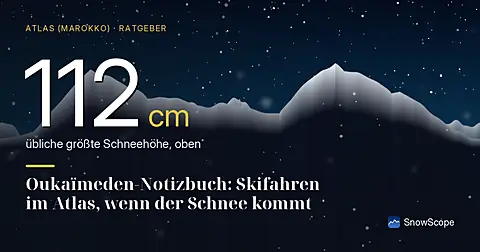
Ein praktisches Notizbuch zu Oukaïmeden im Hohen Atlas: wann der Schnee meist kommt, wie viel, welche Hänge und die Anreise ab Marrakesch.
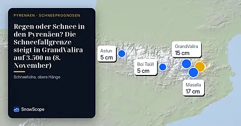
Unsere Prognose hat die Nullgradgrenze in den Pyrenäen in den kommenden Tagen zwischen 2.610 m und 3.840 m. In der wärmsten Zeit des Tages steigt die …

So gelingt ein Tag in Luz-Ardiden, einem kleinen Skigebiet über Luz-Saint-Sauveur in den Hautes-Pyrénées: die Straße, die zwei Sektoren, der Schnee aus 46 vergangenen Wintern und die besten Wochen.

Michlifen bei Ifrane hat Schnee in kurzen Episoden statt einer Saison. Was 46 vergangene Winter zeigen, warum die übliche Höhe null ist und wie man an den richtigen Tagen dort ist.

Drei Arten, einen Tag ab Méribel zu verbringen: nach Osten nach Courchevel, nach Süden Richtung Val Thorens oder daheim am Mont Vallon, mit dem Schnee von 46 vergangenen Wintern auf drei Höhen.

0 cm auf 2.052 m am 7. November, wie in vielen vergangenen Wintern. Der letzte Winter erreichte maximal 100,6 cm. Interaktive Grafik und Daten.

Schneefallgrenze-Vorhersage 2.190–2.850 m vom 8.–10. November. Oberhänge bekommen Schnee; Täler bleiben nass. Daten vom 7. November.
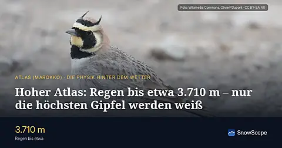
Schneefallgrenze nahe 3.710 m vom 8. bis 12. November: Regen in Oukaïmeden und Imlil, Schnee auf dem Gipfel des Toubkal. Karte und Grafik.
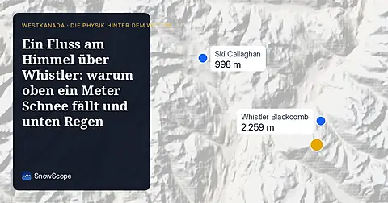
Rund 192 mm Wasser an Whistlers oberen Hängen vom 7. bis 12. November: Die Nullgradgrenze schwankt zwischen 1.410 und 2.920 m, oben Schnee, unten Regen.
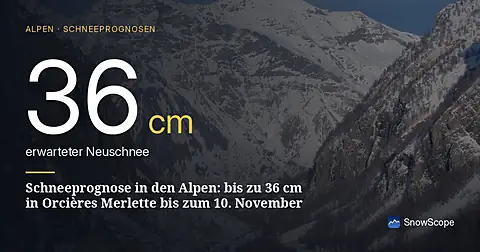
Bis zum 10. November ergibt unsere Prognose 36 cm in Orcières Merlette, 33 cm in Les Deux Alpes und 32 cm in La Grave. Die Werte der Skigebiete sind …

Die Skigebiete im Atlas haben heute keinen Schnee auf den Pisten. SnowScope findet nur auf den höchsten Gipfeln Schnee: etwa 80 km² …


In den Alpen fallen bis 8. November in Saas Grund 21 cm Neuschnee. Prognosedaten vom 5. November zeigen, wo und wann Schnee an fünf wichtigen Skigebieten fällt.
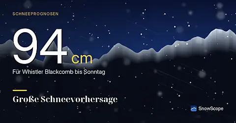
Unser Schneemodell für den 5. November 2026 prognostiziert bis Sonntag bis zu 94 cm Neuschnee in Westkanada, mit erheblichem Schneefall auch in den Alpen und im Westen der USA.

Terenten hat 73 cm auf höheren Hängen zum 4. November; die Nullgradgrenze erreicht am 5. November 2.970 m und bringt Regen bis zum Gipfel auf 1.381 m.
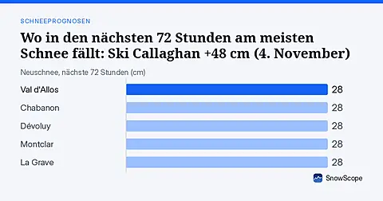
Die heutige Tabelle sortiert die Skigebiete Europas, Marokkos und Nordamerikas nach prognostiziertem Neuschnee für die nächsten 24 Stunden und bis …

Welche Skigebiete haben fast immer Schnee? Wir haben 46 vergangene Winter (1980-81–2025-26) für jedes Skigebiet unserer Karte ausgewertet und die …
Wir haben Schneehöhe, Neuschnee der letzten 72 Stunden und Prognose kombiniert und Masella, Estació d'esquí de Port-Ainé und Cauterets Cirque du Lys …